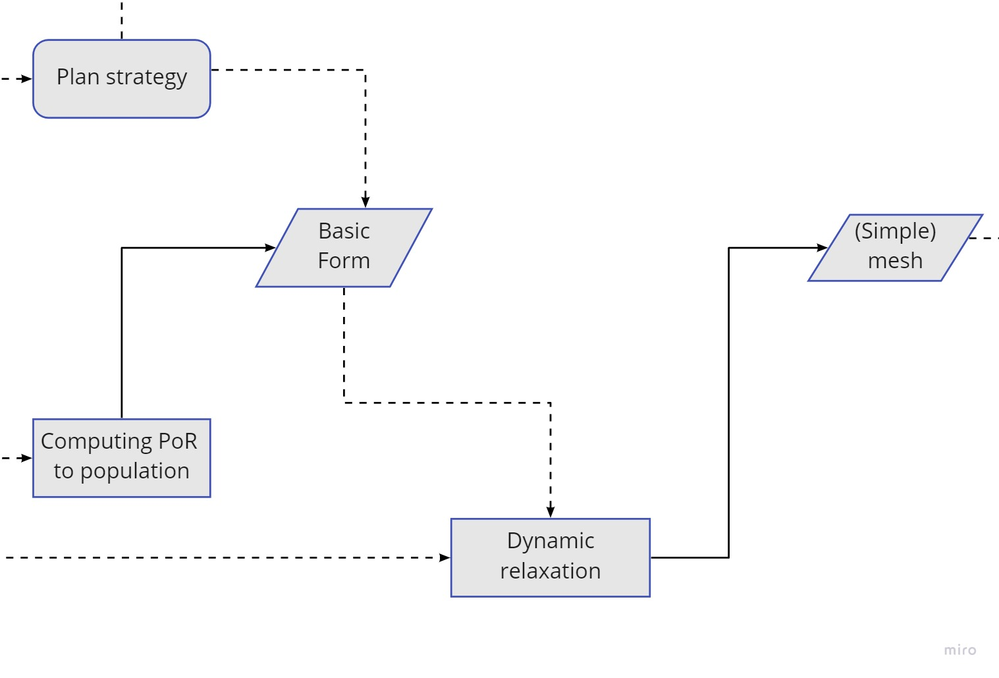
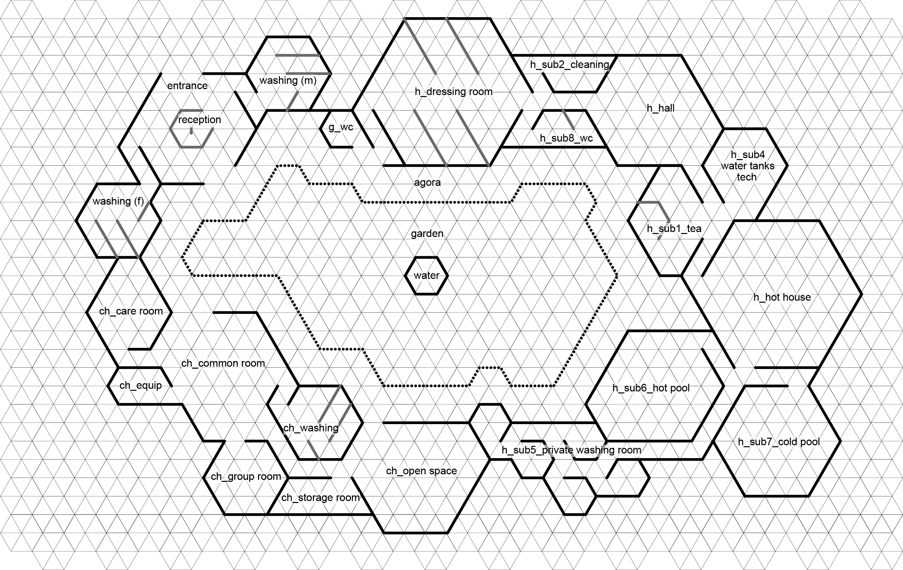
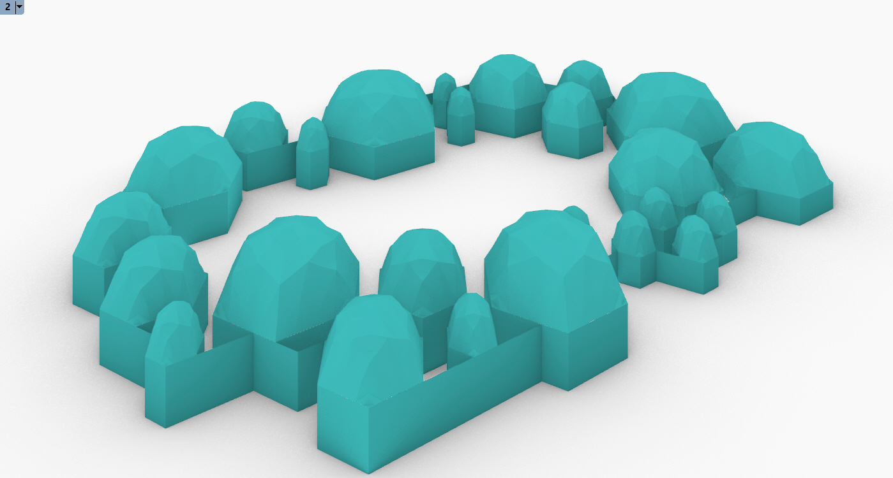
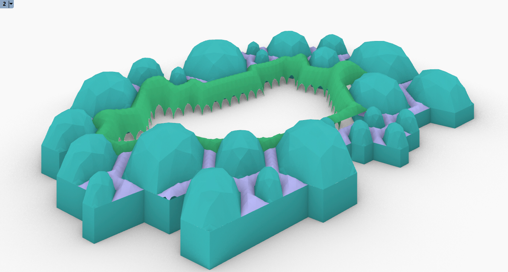
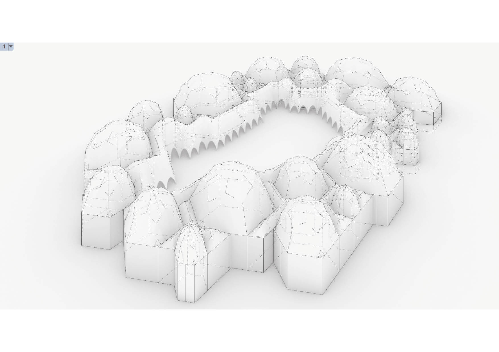
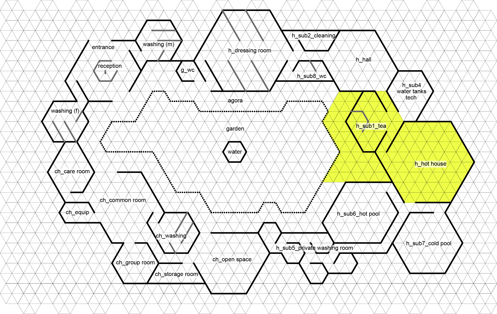
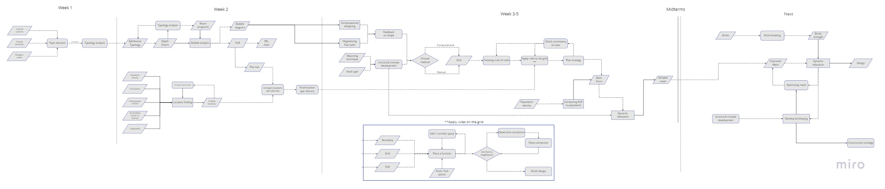

Forming:
Architectural design of the key building types
Last week we developed rules that should define the design strategy and the guidelines on how the building should look.
This week started off with the choosing a final strategy that follows the rules we wrote. Then we finish some overall things and have our mid-terms on thursday.
This week we will create a strategy, choose it and continue towards a 3D shape. We will have to add dynamic relaxation and a structure definition to our project. Also this
week is the mid-terms. This is the proposed flowchart for this week:

Fig. 1: This weeks flowchart
Our strategy

Fig. 2: We added the rules to our grid and developed a design
Figure 2 shows the sketch we made that we felt comfortable with. It contained all the needed rules and looked promising. The garden with the stoa around can be a super beautiful place and the walktrough the building was convincing as well. Eventually we made the following layout out of this sketch:

Fig. 3: Our final layout
The entrance is on the north-west and contains access to the washing areas, as well as to the garden. Around the garden the stoa is the main feature in the building. We also want to
develop this stoa to look super nice, by the use of dynamic relaxation. The Hammam has an obvious degree of privateness, where the route starts at the dressing-rooms. Via the hall and
the tea room, people come at the hothouse, with connections to the pools and private areas. The childcare has been seperated by the long closed wall to form a barrier between the two
functions.
The following GIF shows the layout being made by following our rules:

Fig. 4: The making of the layout
How will we build this?
As the building is fully constructed by hexagons, we can easily create domes on top of them. It is also our idea to build almost all the domes by their own, using "simple" domes. We will create a "guide" on how to build a dome from a hexagon, the building should then look like this:

Fig. 5: The domes of the Hammam
We want to build a scale model ourselves of this kind of dome, to experience how building this is. The guide should focus on how unskilled people can build it safely and easy. Therefore our domes aren't really interesting and challenging to design. To counter this, we decided to make some things a bit more challenging. Previously was told that the stoa has an important role in the Hammam. It holds everyhing together and can be a pleasing to be place. Therefore we will relax this shape and design in computationally. It will be a nice to look at as it is mathematical logically. Together with the vaults and stoa our Hammam should look like this (take not this is the ceilings, not the roofs):

Fig. 5: The vaults and stoa of the Hammam

Fig. 5: The final look of the Hammam
Also, to challenge us in the compression-only building we will make a piece of the Hammam more challenging. Ignoring that people have to make it, we can experiment a bit more with compression-only buildings. The yellow parts on Figure 6 show the dome we want to experiment with and some pieces of the stoa that require extra detailing.

Fig. 6: Our structural challenge/span>
Brick testing
This week also contained the brick testing. We have a seperate page about this.
See this page
Next steps
After the midterms we enter the structuring phase. We start by improving our tesselations and start by making the whole models of the hammam. We will do this in 3 pieces. The stoa first will be developed and dynamic relaxed. All the domes are developed by a rulebook that work for all the domes. Lastly the structural challenge requires some more detailing. For now the flowchart looks like:

Fig. 7: Flowchart until the midterms